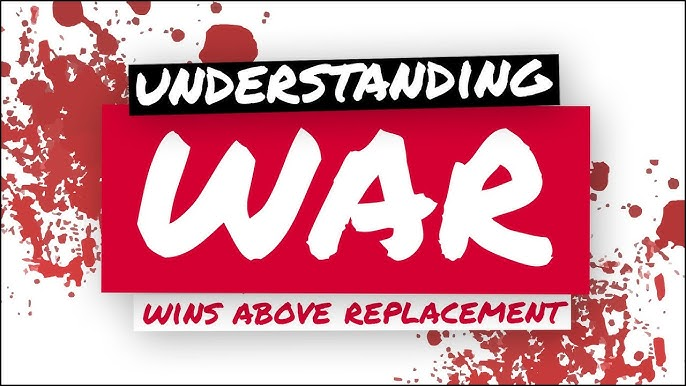

What does it mean?
Wins Above Replacement (WAR) is an attempt by the sabermetric baseball community to summarize a player's total contributions to their team in one statistic. It values everything a player does like Hitting, Base running, and Defense. There are two main versions of WAR that most people use. The two versions are FWAR and BWAR, FWAR is calculated by Fangraphs and BWAR is calculated by Baseball reference. They are meant to be the same but both sites calculate them slightly different. It really just comes down to personal preference. A replacement level player(A baseball player who performs at a level that's expected from a player who's acquired at minimal cost to a team.) will have 0-1 WAR in a season, an Average starting caliber player will have 2-3 WAR in a season, an All Star level player will have 4-5 WAR in a season, and an MVP level player will have 6+ WAR in a season.